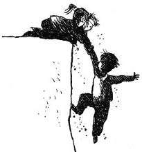
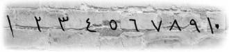

Aşağıya indiklerinde büyük bir salonda buldular kendilerini. Erim’in adımını atmasıyla birlikte yerdeki döşemenin büyük bir bölümü gürültüyle çöktü. Nisan ve Zafer son anda yakaladılar Erim’i. Erim korkuyla geriye adım attı. Mumların aydınlattığı salona baktılar; duvarda freskler,[28] yerde de seçemedikleri resimler vardı.
— Arkanmızdahızzz de messsheal vazz, de-di Zafer.
Nisan,
— Ne?
— “Arkamızda meşaleler var” diyor, dedi Erim.
— Ben niye anlamadım?
— Korktuğunda ne söylediğini sadece ben anlarım çünkü.
Cidden de duvarda reçineleşmiş, belli ki yıllardır orada duran meşaleler vardı, onları tutuşturunca ortalık bir anda aydınlandı.
— Tavana bakın, diye işaret etti Nisan.
— Dedenin yazısı olmalı bu. Babamın yazısından farklı.
— Galiba, diye cevapladı Nisan.
Yukarıda “GÖKYÜZÜ SİZE YOL VERİR” yazıyordu.
Nisan,
— Nasıl yani? Gökyüzünü görmüyoruz ki!
— Yere bakın!
Salonun kare şeklindeki döşemelerden oluştuğunu fark ettiler. Biraz önce o döşemelerden biri düşmüştü. Hepsinin üstünde çarkın üzerindeki sembollerden vardı; balık, güneş, ağaç ve çift başlı kartal.
Bönbön,
— Eee?
— Bakın güneş ve kartal gökyüzünü temsil ediyor, balık suyu, ağaç toprağı... Yani güneş ve kartal olan döşemeler sağlam, diğerlerinin altında tuzak var.
— Aşağı düşenin üzerinde ne vardı acaba?
Nisan gülümseyerek Zafer’i cevapladı:
— Balık diyeceğim ama kofono diyerek düzeltirsin diye korkuyorum.
— Kofono değil, kofana!
— İlk adımı ben atıyorum, şu güneşe basıyorum, yanlışsa size düşerken “yanlış” diye bağırırım, diyerek güldü Erim.
— Dur! İple birbirimize bağlanalım, dedi Nisan.
En öne Erim, arkasına Nisan, arkasına Zafer geçti, iple birbirlerine bağlandılar. Erim’in adımını atmasıyla “Allaaah” diye bağırması bir oldu. Ondan daha hızlı bir şekilde Bönbön’ün sesi geldi:
— Yandım Anaam!
Erim sakin bir şekilde döndü.
— Niye yandığını öğrenebilir miyim Bönbön?
— Ne bileyim, sen bağırınca yüreğime iniyordu, yapma Allah aşkına!
— Ciddi ol Erim, dedi Nisan.
— Tamamdır dostum, şimdi ciddiyet. Burası sağlam. Şimdi çift başlı kartala geçiyorum, evet sağlam.
Birbirlerini takip ederek yavaş yavaş, neredeyse gökyüzünde yürür gibi salonda yürüdüler.
Üçünün de kalbi “küt küt” atıyordu. Fresklerdeki yüzler sanki onlara gülümsüyor ve cesaret veriyordu. Hatta Erim, bir kadın resminin yüzünde, “Aferin şu gençlere, yaşlarına bakmadan ne kadar cesurca davranıyorlar” der gibi bir ifade sezmişti. Yolu bitirdiklerinde bir duvarla karşılaştılar.
Duvarın üstünde yan yana yazılmış rakamlar vardı:

1 2 3 4 5 6 7 8 9 10
Erim,
— Ne yapacağız şimdi?
— Bunu, ben biliyorum,
— Nasıl?
— Seyret.
Zafer, duvardaki dört rakamı sırayla ve hızla itti, bir anda duvarda bir kapının gürültü ve toz içinde açıldığını gördüler.
Erim, Zafer’e baktı.
— Kaçtı o rakam?
— Sonra söylerim.
— Allah aşkına hangi rakamla açtın?
— Yürüyün sonra söylerim. Duvarda meşaleler var, dedi Zafer.
— Hımm... Korkun geçti, dedi Nisan.
— Evet, kendime geldim.
Meşaleleri yaktılar ve tam önlerinde büyük bir makine gördüler. Üzerinde kırka yakın çarktan oluşan bir mekanizma ve kocaman bir kol vardı. Erim hemen kolu çevirdi. Dişlerin bir bölümü hareket ederken bir bölümü kıpırdamadı bile. “Allah kahretsin!” dedi. Epey uğraştıktan sonra Erim,
— Buraya kadarmış! Bu mekanizma çalışmıyor, yirmi yıl durunca bozulmuş olmalı.
Nisan, “Sakın çantandaki eksik çark yüzünden olmasın?” deyince Erim aceleyle çantayı açtı, maceranın başından beri yanında taşıdığı ve bir işe yaramayan çarkı çıkardı. Dişliler arasındaki boşluğu gördüler. Erim çarkı öptü ve dikkatle yerleştirdi. Tekrar kolun başına geçti ve çevirdi, tüm mekanizma ve çarklar hareket etti, duvar gürültüyle büyük bir kapı gibi açılmaya başladı. Erim ve Nisan da kola daha çok yüklendiler, duvar sonuna kadar açıldı.